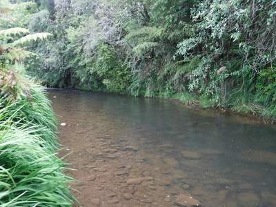
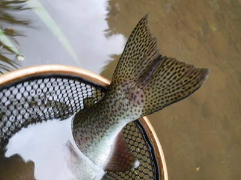
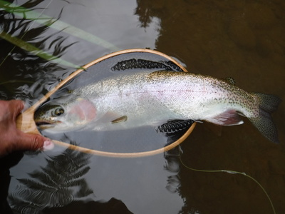
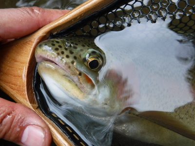
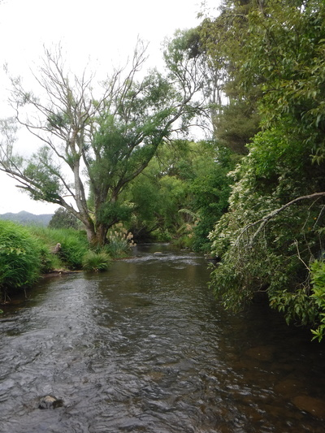

釣行日誌 ＮＺ編 「一期一会の旅：A Sentimental Journey」
この川でのレコード
11/30(FRI)-3
午後６時を過ぎ、何となく夕暮れが近づいて来た気配がした。

はるか上流の流れ込みから長く続く淵があった。下手の流れ出しから丁寧に探りを入れる。1.5mのナチュラルドリフト、5歩のステップ、それを繰り返しながら上流へと探って行く。流れ込みの波立ちが消えるあたりで、まったく魚影は見えなかったが、突如として浮上した黒い頭が白く見えるウイングに被さった。
『よしっ！』
しっかり間を置いてロッドを立てると、ずっしりと魚の重みが乗った。すぐにラインを手繰ってテンションを保つ。大きい。淵の真ん中で高いジャンプを魅せてから下流へと疾走する。手繰って足下に落ちたラインが左足に絡まる。右手にロッドを持ち替え、なんとか左手でラインを足から外そうと試みるが、バランスを失って浅瀬に仰向けで倒れ込む。流れに横になりつつもロッドは立てたままラインを緩めないようしっかり押さえる。鱒ははるか下流で抵抗を続けている。起き上がって川底に座り込んでラインの絡まりを解き、急いで巻き取ってリールファイトに持ち込む。再びのジャンプ。ディーンに教わったとおり、下流側水平にロッドを倒し、サイドプレッシャーを掛けて鱒を足下まで誘導する。やっとの思いでネットに入れた。


この川には何年も通ったものだったが、こんな見事なレインボーは初めてだった。日本の渓流用の小さなネットだったが持ってきて本当に助かった。

顎にしっかり刺さっていたロイヤルウルフを外し、そっと流れに戻してやる。釣り上げた魚をリリースしてやると、その川が自分のものになったような気がする、と開高さんは書いていたが、まさにそのとおりだと思えた。
大物を釣り上げることが出来たので、今日はここで気分良く納竿とし、川の中を歩いて戻る。

川底は相変わらず滑りやすく、歩み下るのに神経を使ったが、なんとか転ばずに橋まで戻って来た。
車のトランクを空け、防水スタッフバッグを敷いてどっかりと座り込んで濡れた靴とネオプレンストッキングを脱ぐ。乾いたズボンを履くと、濡れた下着の冷たさが消え、人間らしさが戻ったように感じられた。（笑）ちょうど農家のおじいさんがトラクターに乗って通りかかったので、手を振って挨拶した。
心地よい疲労感を抱いて赤いカローラハッチバックに乗り込み、僕だけの川を後にした。
釣行日誌ＮＺ編 目次へ
サイトマップ
ホームへ
お問い合わせ